Qwen/Qwen3.5-2B
mean reward 0.188 · compile rate 27% · 84 valid rollouts. Blue = reference; green ≥ 0.9, orange ≥ 0.4, red below. Hover a tile for the generated OpenSCAD.
L1 · example 0 · mean 1.00 · max 1.00
Create an upright cylinder of height 55mm and diameter 20mm.

;")
;")
L2 · example 1 · mean 0.31 · max 0.83
Create a 75mm by 65mm plate of thickness 11mm with a centered 30mm-diameter through-hole.

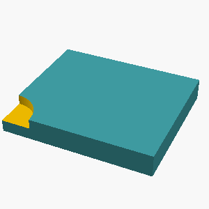
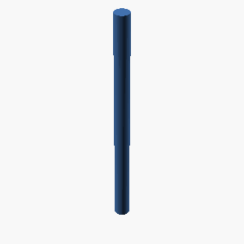
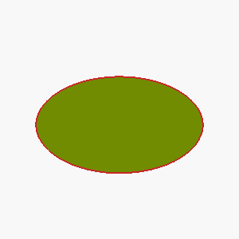
L3 · example 2 · mean 0.13 · max 0.54
An L-shaped bracket 20mm wide: a horizontal leg 65mm long and a vertical leg 30mm tall, both 10mm thick, joined at a right angle. The horizontal leg has a circular hole of radius 4mm through its center, drilled vertically.

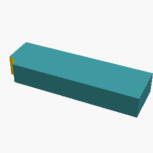
L4 · example 3 · mean 0.36 · max 0.62
A monument-like shape: a circular base plate of radius 40mm and thickness 10mm, with a cylindrical post of radius 8mm and height 50mm standing centered on top of it, and the post capped with a hemispherical dome of radius 8mm.

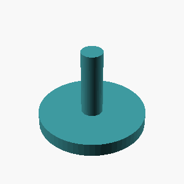
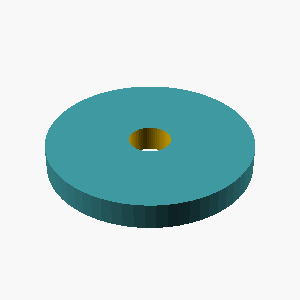
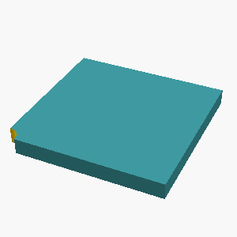
L1 · example 4 · mean 0.46 · max 1.00
A solid sphere with a radius of 20mm.

;")
);")
L2 · example 5 · mean 0.00 · max 0.00
A solid box 30mm x 20mm x 20mm with a rectangular notch 8mm wide and 7mm deep cut into the middle of its top face, running through the full depth of the box.

 {
// Main solid box 30mm wide, 20mm high, 20mm deep
box([30, 20, 20], radius=0);
// Notch dimensions: 8mm wide, 7mm deep, running through full depth (20mm)
// The notch is centered top, running through the front/back
notch_w = 8;
notch_d = 7;
notch_depth = 20; // Full depth
box([notch_w, notch_d, notch_depth], radius=0);
// Avoid inside of notch
translate([notch_w/2, notch_d/2, -notch_d/2]) {
box([notch_d, notch_d, notch_depth], radius=0);
}
}")
 {
// Main box (30 x 20 x 20)
box([30, 20, 20]);
// Rectangular notch on top face
// Width 8mm, Depth 7mm
// Position: left 4mm from bottom-left corner, goes back 7mm
box([8, 7, -0.1]) translate([15, 20, -0.5]); // removing ~0.1 thickness to prevent tunneling
}")
L3 · example 6 · mean 0.18 · max 0.71
A solid box 60mm wide (x), 30mm deep (y), and 30mm tall, with a 6mm-radius hole drilled vertically through the center of the entire part; and a cylindrical boss of radius 6mm sticking out 14mm horizontally from the center of its +X side face. The part sits on the z=0 plane, centered on the Z axis.

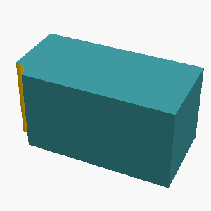
 {
difference() {
// Main solid box: 60 wide (x), 30 deep (y), 30 tall (z)
box([60, 30, 30], $cm = true); // Now units in mm
// Centered on Z axis
translate([0, 0, 0])
{
// Horizontal cylindrical boss: radius 6mm, length 14mm along +X axis
cylinder(r = 6, h = 14, $cm = true);
// Orient it along +X axis
rotation([0, 0, 1]);
}
// Vertical hole: radius 6mm, through the entire depth (30mm)
translation([60/2, 0, 0]) // Centered horizontally
{
cylinder(r = 6, h = 30, $cm = true);
// Orient it along +Z axis
rotation([0, 0, 1]);
}
}
}")
L4 · example 7 · mean 0.00 · max 0.00
A solid box 65mm wide (x), 50mm deep (y), and 15mm tall, with 6 holes of radius 2mm drilled vertically through it, evenly spaced on a circle of radius 19.4mm around the center, the first hole on the +X axis; and a cone of base radius 6mm and height 35mm standing centered on its top face, apex up; and a 3mm-radius hole drilled vertically through the center of the entire part; and a cylindrical boss of radius 4mm sticking out 16mm horizontally from the center of its +X side face. The part sits on the z=0 plane, centered on the Z axis.

L1 · example 8 · mean 0.00 · max 0.00
A solid cone 55mm tall with a base radius of 25mm, point facing up.

 {
translate([0,0,55]) cone(r=25, h=55, $fn=64);
}")
 {
cone(h=55, r=25, angle=180, $fn=64);
}")
;")
L2 · example 9 · mean 0.00 · max 0.00
Create a box-shaped tray 45mm x 60mm x 50mm on the outside, hollowed from the top leaving 3mm thick walls and base.

L3 · example 10 · mean 0.24 · max 0.55
A solid hexagonal prism 40mm tall, 60mm across the flats, with two flats parallel to the x axis, with a hemispherical dome of radius 21mm centered on its top face; and a 5mm-radius hole drilled vertically through the center of the entire part. The part sits on the z=0 plane, centered on the Z axis.


cylinder(h=40, r=30, $fn=64, w=60);
hemi(r=21); // Half-cylinder on top
hemi(r=21); // Half-cylinder on bottom
// Drill hole
cube([5,5.00000000001, 40.00000000001], w=0, x=0);")

{
h = 60;
w = 40;
s = 60;
d = 5;
scale = [1,1,s];
translate([s/4,d,0]) cube([w/2,w/2*h,1], $fn=64);
translate([0,0,w/2-d], $fn=64) sphere(h = w/2, r = s/2);
translate([-s/2,-s/2,h+d,0], $fn=64) circle(r = h/2 - 2, $fn=64);
}
translate([0,0,0.5], $fn=64) sphere(h = s, r = s);
translate([0,0,40.5]) hole(r = d, $fn=64);")
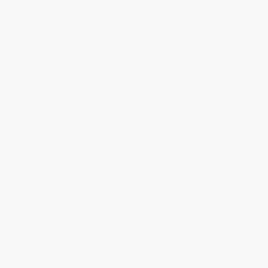
L4 · example 11 · mean 0.00 · max 0.00
A solid upright cylinder of radius 30mm and height 50mm, with a hemispherical dome of radius 6mm centered on its top face; and a horizontal hole of radius 14mm drilled along the X axis through the whole part at half its height, centered in Y; and 6 holes of radius 2mm drilled vertically through it, evenly spaced on a circle of radius 16.3mm around the center, the first hole on the +X axis. The part sits on the z=0 plane, centered on the Z axis.

L1 · example 12 · mean 0.45 · max 1.00
A solid rectangular box 70mm wide, 25mm deep, and 50mm tall.

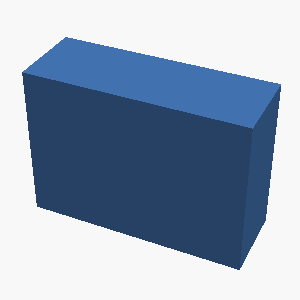
;
cylinder(h=25, r=2, $fn=64);
cylinder(h=50, r=2.5, $fn=64);
difference() {
cylinder(h=70, r=4, $fn=64);
translate([10,10,-1]) cylinder(h=12, r=4, $fn=64);
translate([10,10,-1]) cylinder(h=25, r=4, $fn=64);
translate([10,10,-1]) cylinder(h=12, r=4, $fn=64);
translate([10,10,-1]) cylinder(h=50, r=4, $fn=64);
translate([10,10,-1]) translate([10,10,-1]) cylinder(h=18, r=2, $fn=64);
translate([10,10,-1]) translate([10,10,-1]) cylinder(h=18, r=2, $fn=64);
translate([10,10,-1]) translate([10,10,-1]) cylinder(h=18, r=2, $fn=64);
translate([10,10,-1]) translate([10,10,-1]) cylinder(h=18, r=2, $fn=64);
}")
 {
cube([100,100,100]);
translate([50,50,50]) box([70,25,50], thickness=1);
}")
 {
// Create the main body
box([70, 25, 50]);
// Subtract corners
translate([70/2, 25/2, 50/2]) box([25, 25, 25]);
translate([70/2, 25/2, -25]) box([25, 25, 25]);
translate([-35, 25/2, 25]) box([35, 25, 25]);
translate([-35, -12.5, 25]) box([35, 25, 25]);
}")
L2 · example 13 · mean 0.00 · max 0.00
Create a box-shaped tray 70mm x 55mm x 45mm on the outside, hollowed from the top leaving 5mm thick walls and base.

 {
// Create the outer box dimensions
box([70, 55, 45]);
// Specify the hollowed volume (base height of 5mm)
// The outer thickness will be the difference total (45*2 = 90mm)
// We model two halves of the outer box with a common plane hole
translate([35, 27.5]) {
// Upper half
box([70, 55, 45]);
// Lower half connected at the bottom of the upper half
translate([0, 45 - 25/2]) {
// Lower half (bottom section)
box([70, 55, 45]);
// Top square cutout for the hollow part
// Height of hollow = 5mm (half of total 10mm)
// Positioning: centered on the bottom half of the 70mm width
box([70, 55, 5]);
// Note: In subtractio")
L3 · example 14 · mean 0.11 · max 0.43
A solid hexagonal prism 15mm tall, 50mm across the flats, with two flats parallel to the x axis, with a 11mm-radius hole drilled vertically through the center of the entire part; and a square pad 32mm x 32mm and 5mm tall sitting centered on its top face. The part sits on the z=0 plane, centered on the Z axis.

 forcenter();
difference() {
cylinder(d=15, h=15, $fn=64);
// Square pad around the hole
for(center_cube()) {
translate([17,0]) cube([36,36,8], $fn=64); // 5mm added to 50 -> 55 old, now center pad 32 -> half is 16, so 50+5-32=23?
// Let's re-calculate:
// Hole radius: 11mm. Drilled vertically through the center of the hexagon.
// The hexagon is defined by points at [-(d/2), 0], [0, d/2], [(d/2)-r, d/2], etc?
// Actually standard hex centered at origin with flats on x-axis passes through ±25, and y-jaunts.
// But hex has width (flat side) = 50. Let's orient hex with flat side along X.
// Vertices:
// (25, 0), (0, 25), (-16, 25), (-16, -25), (0, -25), (16, -25)
// That makes flat si")
 {
// Solid hexagonal prism
prism_h($fn=64, h=15, w=50) {
// Square pad top face
box([32, 32, 5]) {
// Square pad bottom face
box([32, 32, 0]);
}
// Base
box([32, 32, 0]);
}
// Hole drilled vertically through the center (from bottom to top)
box([12, 50, 12]) { // 11mm radius -> diameter 12
// Square pad bottom
box([32, 32, 0]);
// Square pad top
box([32, 32, 5]);
}
}")
 {
// Main hexagonal prism
// Dimensions match description: plank length = 50mm, height = 15mm
hexedra(
length = [50 - 5, -2.5],
height = [0, 15 - 5, 0],
hole_offset = [25, 25, 10]
);
// Square pad dimensions
// Size: 32mm x 32mm, Height: 5mm
// Sit center on the top face of the hole
// Relative to hole coordinate system:
// x: (-16, 16) -> center (-16 + 16/2, 16/2) = (-8, 8) relative to hole center
// y: (-16, 16) -> center (-16/2, -16/2) = (-8, -8) relative to hole center
// z: 5
cube([32, 32, 5], $fn = 64, center = [-8, -8, 50]);
}")
L4 · example 15 · mean 0.10 · max 0.41
A monument-like shape: a circular base plate of radius 30mm and thickness 8mm, with a cylindrical post of radius 20mm and height 25mm standing centered on top of it, and the post capped with a hemispherical dome of radius 20mm.

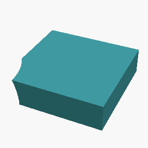
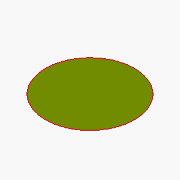
L1 · example 16 · mean 0.11 · max 0.45
Create an upright cone: base diameter 80mm, height 50mm, apex at the top.

 {
translate([0,0,-50]) cylinder(h=50,r=40,$fn=64);
translate([0,0,0]) cone(r=40,h=50,$fn=64);
}")
;")
;")
 {
cone(h=50, r=40, base_r=40, top_r=0, $fn=64);
}")
L2 · example 17 · mean 0.00 · max 0.00
Create a box-shaped tray 55mm x 30mm x 60mm on the outside, hollowed from the top leaving 4mm thick walls and base.

 {
box([55, 30, 60]);
box([4, 10, 60]);
// Hollow top
$fn = 64;
extrude(depth=60) translate([20.5, 20, 25]) cylinder(r=29, h=60, $fn=$fn);
translate([20.5, 20, 0]) box([29, 60, 60]);
// Base
translate([20.5, 20, 0]) box([55, 30, 60]);
// Left side walls
translate([0.5, -5, 5]) extrude(depth=60) box([30, -12, 60]);
translate([25.5, -5, 5]) extrude(depth=60) box([20, -24, 60]);
translate([40.5, -5, 5]) extrude(depth=60) box([55, -0, 60]);
// Front bottom edge
translate([0.5, 18, 1]) extrude(depth=45) box([30, -16, 60]);
// Rear bottom edge
translate([40.5, 18, 1]) extrude(depth=45) box([20, -33, 60]);
// Top side edges of remaining walls (bottom of outer box, above hollowed top)
translate([-5, -10, 5])")
 {
// Dimensions: 55mm x 30mm x 60mm
translate([0,0,30]) cube([55, 30, 60]); // Outer dimensions, empty inside
// Hollow: 4mm thick walls (55-4)/2 = 25.5 on each side, so 25mm width
translate([25, 15, 30]) cube([25, 30, 60]); // Base
translate([25, 15, 25]) cube([25, 30, 60]); // Side walls (25mm wide, 30mm high)
}")
L3 · example 18 · mean 0.00 · max 0.00
A solid box 45mm wide (x), 40mm deep (y), and 25mm tall, with 3 holes of radius 2mm drilled vertically through it, evenly spaced on a circle of radius 14.2mm around the center, the first hole on the +X axis; and a cylindrical post of radius 5mm and height 40mm standing centered on its top face. The part sits on the z=0 plane, centered on the Z axis.

L4 · example 19 · mean 0.00 · max 0.00
A hexagonal prism (like a nut) 8mm tall, measuring 35mm across the flats, with a circular hole of radius 6mm drilled through its center along the axis.

L1 · example 20 · mean 0.50 · max 1.00
A solid cylinder 30mm tall with a radius of 10mm, standing upright.

;")
 {
// Film the empty cylinder with the empty square hole square the hole to make the ring
cylinder(h=30, r=10, $fn=64);
offset(distance=5, direction=[0,0,1]) cylinder(h=30, r=5, $fn=64);
}")